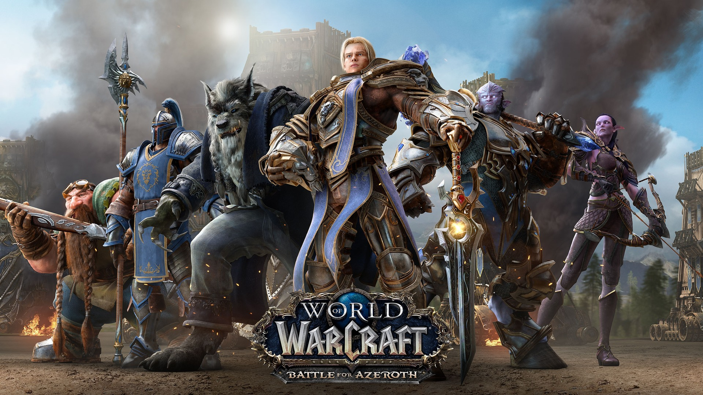

Aliança
A Aliança é uma das duas facções jogáveis do World of Warcraft, a outra sendo a Horda. A Aliança é composta por várias raças, incluindo humanos, anões, elfos noturnos, gnomos, draeneis e worgen. A história da Aliança remonta à Primeira Guerra, quando o reino humano de Stormwind foi atacado pela Horda invasora. Outras raças, como os elfos noturnos e os anões, se juntaram aos humanos para combater a Horda e, eventualmente, formaram a Aliança. A Aliança é conhecida por sua honra e nobreza em batalha, bem como por sua habilidade em combate estratégico. Os jogadores da Aliança têm acesso a habilidades e equipamentos exclusivos, bem como a locais e missões únicas. Na história do World of Warcraft, a Aliança tem lutado contra a Horda em várias guerras e conflitos, embora também tenha enfrentado ameaças de inimigos externos, como a Legião Ardente. A Aliança é liderada por vários líderes, incluindo o atual rei de Stormwind, Anduin Wrynn, que assumiu o trono após a morte de seu pai, Varian Wrynn.
O rei
Na história do World of Warcraft, o líder da Aliança é o Rei de Stormwind, que é escolhido por linhagem familiar ou através de eleições. O título de Rei da Aliança é frequentemente utilizado de forma intercambiável com o título de Rei de Stormwind, já que a maioria dos líderes da Aliança têm sido oriundos desse reino. O cargo de rei é geralmente ocupado por humanos, como o atual rei Anduin Wrynn, embora a liderança da Aliança seja compartilhada com outros líderes de raças individuais, como Malfurion Tempesfúria dos elfos noturnos e Genn Greymane dos worgen. A liderança da Aliança é representada pelos jogadores em cargos de alto escalão, como chefes de clãs e generais. Os jogadores da Aliança trabalham juntos para completar missões, batalhas e outras atividades, seguindo as diretrizes da liderança da facção. A Aliança é conhecida por sua estrutura de comando militar, liderada por um alto comandante, que é responsável por liderar as forças militares da facção em batalhas e campanhas. Na história recente do jogo, o cargo de alto comandante da Aliança foi ocupado por personagens como Varian Wrynn e Anduin Wrynn. Em resumo, o líder da Aliança é o Rei de Stormwind, escolhido por linhagem familiar ou eleições, e a liderança da facção é compartilhada com outros líderes de raças individuais. A liderança é representada pelos jogadores em cargos de alto escalão e a Aliança é conhecida por sua estrutura militar organizada.